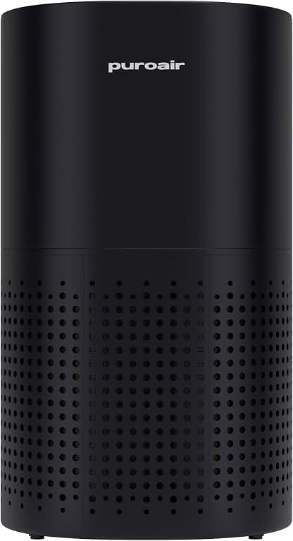
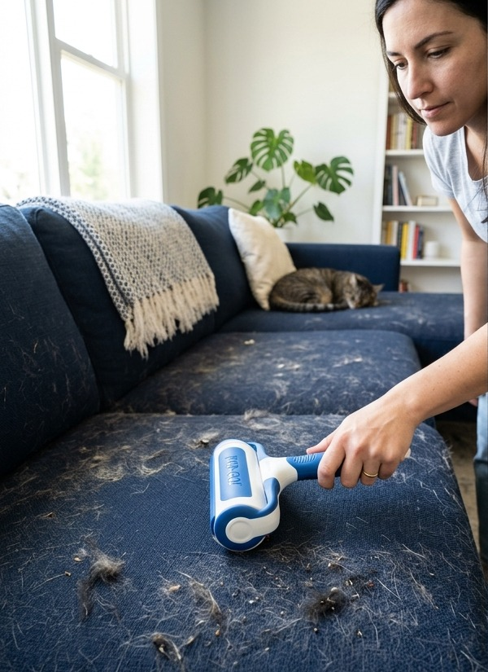
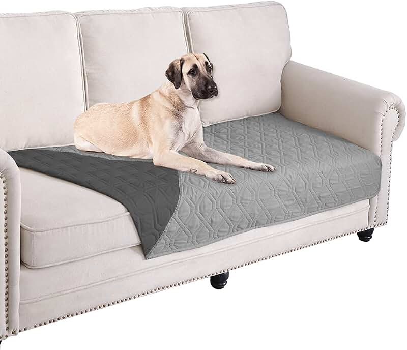
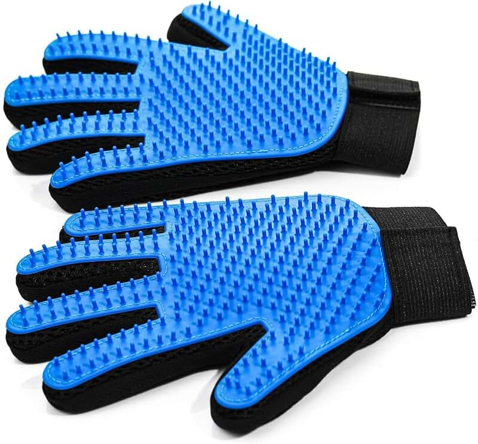

HEPA Air Purifier for Pet Dander & Fur
Traps floating airborne fur, dander, and odors before they land on furniture.
- H13 True HEPA filtration
- Quiet sleep mode
- Reduces allergy symptoms
Cat and dog fur clings stubbornly to couches, rugs, and clothing. A reusable pet hair roller and a rubber squeegee broom remove fur twice as fast as sticky lint tape.

The most satisfying fur tool is a ChomChom Reusable Pet Hair Roller. Rolling back and forth traps fur inside a built-in dust compartment without sticky sheets.
Standard vacuums scatter fur airborne or tangle their roller heads. Rubber tools generate electrostatic friction that binds fur together into easy-to-grab rolls.
Run a rubber squeegee roller over your couch cushions before vacuuming. It lifts 90% of fur in seconds, leaving your vacuum filter clean.

Traps floating airborne fur, dander, and odors before they land on furniture.

Shields your main sofa from fur, mud, and scratches. Throw it in the washing machine weekly.

Groom your pet while petting them! Removes loose undercoat fur directly from the source.
Use a reusable ChomChom roller for daily couch touch-ups and a rubber broom for carpets once a week.
| Product | Best for | What it helps with | Why people like it |
|---|---|---|---|
| ChomChom Couch Roller | Couches & bedding | Instant fabric fur removal | No sticky paper waste, push-button clean |
| Rubber Squeegee Broom | Carpets & area rugs | Deep carpet fur extraction | Rubber bristles attract embedded hair |
| HEPA Air Purifier | Airborne dander & fur | Reducing allergy triggers | Quiet H13 HEPA filtration |
| Grooming Gloves Pair | Direct pet grooming | Stopping shedding at the source | Pets enjoy the petting motion |